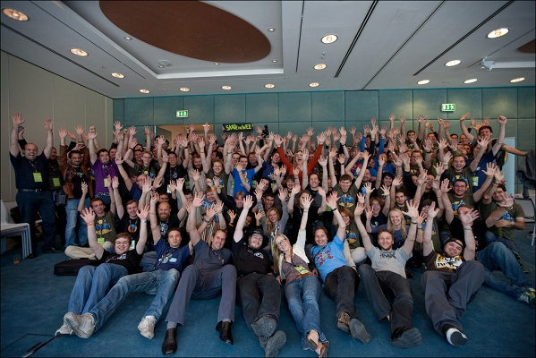

How I made my resume
…on the 50th try?
A few weeks ago, I was looking for a job.
So I crafted a normal resume:
 Yeah, I know, it's not really original!
Yeah, I know, it's not really original!
Few responses later… few interviews…
nothing serious!
(and by serious, I mean no contracts!)So, I decided to have fun and hack my resume.
Here's the result of my hacks!

It's all about storytelling!
 (other guys talk about timelines).
(other guys talk about timelines).
Timeline
-

The Math Girl
2004 -
The Adventure Girl
2007 -
The Web Girl
2010 -
To infinity and beyond
2012
2004 - The Math Girl
After high school and a French scientific Baccalauréat, I decided to join SUPINFO Paris
because I was pretty good at mathematics and at fixing computer problems- Maths

- Computer Sciences

- Web Technologies

- Management
During my school years, I worked for Apple and Management SUPINFO labs:
- Documentations
- Lessons
- Articles
- Workshops
- Project design
2007 - The Adventure Girl
At SUPINFO, we have the chance to choose our campus every year.
China, United States, United Kingdom,… it's only a box to check at the beginning of the year!So, for my second year, I checked the Chinese box, to spend my year in SUPINFO Tianjin.
My second adventure is Free software
(Yeah, it's me!)For the last 4 years, I've been a volunteer for the French Mozilla team.
It was full of activities and learning!
2010 - The Web Girl
At the end of my studies, I had the chance to join
a blog dedicated to profiling startups, reviewing new Internet products, and breaking tech news.I wrote articles,
organized events,
such as TechCrunch Recipes
and worked with an amazing team:
Meanwhile, I took part in the organization of
an organization focused on women's innovative and entrepreneurial achievements in technology.
We organized a lot of events, to empower women who launch their startups, to network,…
2012 - To infinity and beyond
The Mozilla girl?
 Could I be here? (in fact, I'm already here… if you can find me)Timeline Recap
-
The Math Girl
2004 -
The Adventure Girl
2007 -
The Web Girl
2010 -
To infinity and beyond
2012
Let's meet!
Julia Buchner
julia.buchner.fr | julia@buchner.frTwitter @Giuliant
linkedin.com/in/juliabuchner